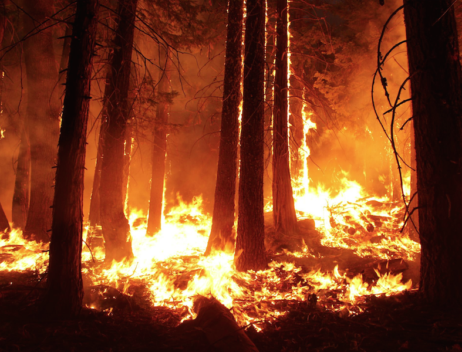

Drought, housing expansion, and oversupply of tinder make for bigger, hotter fires in the western United States
Wildfires are becoming an increasing menace in the western United States, with Southern California being the hardest hit area. There's a reason fire squads battling more frequent blazes in Southern California are having such difficulty containing the flames, despite better preparedness than ever and decades of experience fighting fires fanned by the ‘Santa Ana Winds’. The wildfires themselves, experts say, are generally hotter, faster, and spread more erratically than in the past.
Megafires, also called ‘siege fires’, are the increasingly frequent blazes that burn 500,000 acres or more - 10 times the size of the average forest fire of 20 years ago. Some recent wildfires are among the biggest ever in California in terms of acreage burned, according to state figures and news reports.
One explanation for the trend to more superhot fires is that the region, which usually has dry summers, has had significantly below normal precipitation in many recent years. Another reason, experts say, is related to the century- long policy of the US Forest Service to stop wildfires as quickly as possible.
The unintentional consequence has been to halt the natural eradication of underbrush, now the primary fuel for megafires.
Three other factors contribute to the trend, they add. First is climate change, marked by a 1-degree Fahrenheit rise in average yearly temperature across the western states. Second is fire seasons that on average are 78 days longer than they were 20 years ago. Third is increased construction of homes in wooded areas.
‘We are increasingly building our homes in fire-prone ecosystems,’ says Dominik Kulakowski, adjunct professor of biology at Clark University Graduate School of Geography in Worcester, Massachusetts. ‘Doing that in many of the forests of the western US is like building homes on the side of an active volcano.'
In California, where population growth has averaged more than 600,000 a year for at least a decade, more residential housing is being built. ‘What once was open space is now residential homes providing fuel to make fires burn with greater intensity,’ says Terry McHale of the California Department of Forestry firefighters' union. ‘With so much dryness, so many communities to catch fire, so many fronts to fight, it becomes an almost incredible job.'
That said, many experts give California high marks for making progress on preparedness in recent years, after some of the largest fires in state history scorched thousands of acres, burned thousands of homes, and killed numerous people. Stung in the past by criticism of bungling that allowed fires to spread when they might have been contained, personnel are meeting the peculiar challenges of neighborhood - and canyon- hopping fires better than previously, observers say.
State promises to provide more up-to-date engines, planes, and helicopters to fight fires have been fulfilled. Firefighters’ unions that in the past complained of dilapidated equipment, old fire engines, and insufficient blueprints for fire safety are now praising the state's commitment, noting that funding for firefighting has increased, despite huge cuts in many other programs. ‘We are pleased that the current state administration has been very proactive in its support of us, and [has] come through with budgetary support of the infrastructure needs we have long sought,' says Mr. McHale of the firefighters’ union.
Besides providing money to upgrade the fire engines that must traverse the mammoth state and wind along serpentine canyon roads, the state has invested in better command-and-control facilities as well as in the strategies to run them. ‘In the fire sieges of earlier years, we found that other jurisdictions and states were willing to offer mutual-aid help, but we were not able to communicate adequately with them,’ says Kim Zagaris, chief of the state's Office of Emergency Services Fire and Rescue Branch.
After a commission examined and revamped communications procedures, the statewide response ‘has become far more professional and responsive,’ he says. There is a sense among both government officials and residents that the speed, dedication, and coordination of firefighters from several states and jurisdictions are resulting in greater efficiency than in past ‘siege fire’ situations.
In recent years, the Southern California region has improved building codes, evacuation procedures, and procurement of new technology. ‘I am extraordinarily impressed by the improvements we have witnessed,’ says Randy Jacobs, a Southern California- based lawyer who has had to evacuate both his home and business to escape wildfires. ‘Notwithstanding all the damage that will continue to be caused by wildfires, we will no longer suffer the loss of life endured in the past because of the fire prevention and firefighting measures that have been put in place,’ he says.